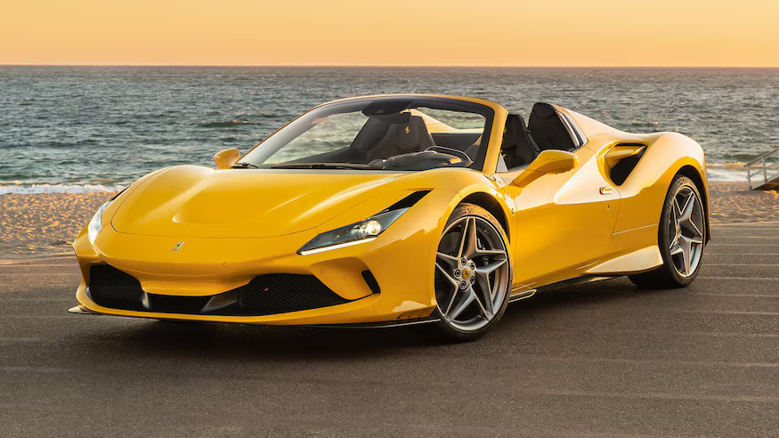
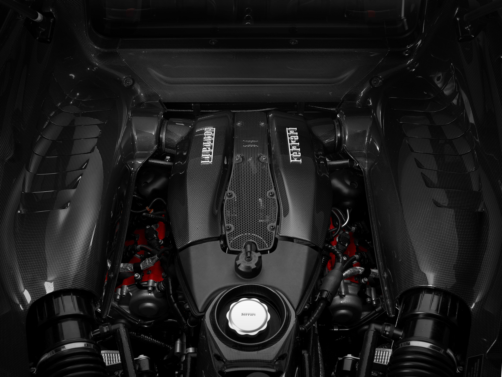

.jpg)
Despre Ferrari F8
Ferrari F8 este o masină cu motor centrat fabricată de Ferrari. A fost lansată în 2019 la Geneva Motor Show ca un înlocuitor pentru Ferrari 488 GTB.
Specificaţii cheie
- Motor: V8 3.9L bi-turbo
- Putere: 710 cp
- Viteza maximă: 340 kph
- Acceleraţie: 0-100 kph in 2.9 secunde
- Motorul V8 de 3902cc a câştigat premiul de “Best Engine” la premiile internaţionale "Best Engine awards" pentru trei ani la rând!

Specificaţii
| Caracteristică | Specificaţie |
|---|---|
| Motor | V8 bi-turbo de 3.9 L |
| Putere | 710 cp |
| Viteză maximă | 340 kph |
| Acceleraţie | 0-100 kph în 2.9 secunde |
Spatele
Ferrari F8 prezintă o fuziune impecabilă de precizie inginerească și alură estetică atât în partea din spate, cât și în compartimentul motorului. În spate, designul lui F8 îmbină perfect funcționalitatea aerodinamică cu o eleganță captivantă, prezentând linii elegante care culminează cu un difuzor dinamic din spate și două orificii de evacuare, emanând un sentiment de viteză chiar și atunci când stați. Completând acest design este compartimentul motor, care adăpostește formidabila motorizare a Ferrari, o minune a priceperii inginerești. Motorul V8 montat la mijloc se așează cu mândrie, prezența sa musculară accentuată de componentele din fibră de carbon și aluminiu, în timp ce atenția meticuloasă la detalii asigură performanțe optime și management termic. Împreună, aceste elemente simbolizează esența Ferrari F8, oferind o simfonie de performanță și artă care captivează deopotrivă entuziaști și pasionați.

Pentru mai multe informaţii, vizitaţi website-ul Ferrari.